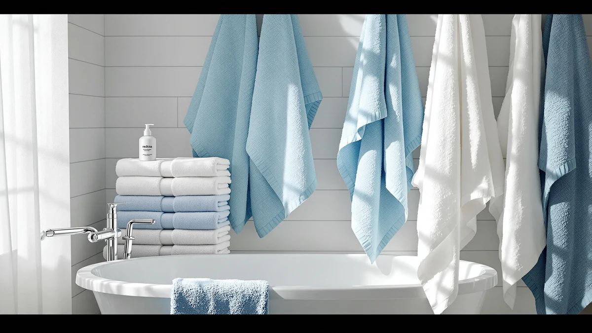

REDKISS Luxury White Bath Review (2026): Worth It?
Prices and picks verified as of October 2026. Independent, reader-supported reviews.


Quick Answer
REDKISS Luxury White Bath Towels are the strongest pick in this redkiss luxury white bath review for shoppers who want bath-sheet-sized coverage without paying bath-sheet prices. At 760GSM and 31 x 63 inches, they out-weigh and out-size the BIOWEAVES and LANE LINEN alternatives we compared them against, for a price that lands within a few dollars of the cheapest option on this list.
Our pick: REDKISS Luxury White Bath Towels, $49.99 Check Price on Amazon
Bottom line: our top pick is the REDKISS Luxury White Bath Towels Set of 2 at $49.99.
Things to Know Before You Buy
- REDKISS sells its bath sheets at 760GSM, heavier than the 700GSM BIOWEAVES sets in this redkiss luxury white bath review. A higher GSM generally means a denser, more absorbent towel, though weave and finishing matter too.
- At 31 x 63 inches, the REDKISS towels run larger than a standard 30 x 58 bath towel. That extra coverage puts them closer to a bath sheet than a traditional towel, which matters if your linen closet is sized for smaller pieces.
- REDKISS prices its two-pack at $49.99, or about $25 per towel. BIOWEAVES undercuts that at $49.00 for its organic two-pack, while LANE LINEN's 16-piece set runs $54.99 for the whole set.
- Neither REDKISS nor either BIOWEAVES set carries a published star rating on Amazon. We based this comparison on manufacturer specs, pricing, and patterns in verified buyer feedback rather than an aggregate score.
- Organic certification and heavyweight GSM solve different problems. If chemical-free processing matters more to you than raw thickness, the GOTS-certified BIOWEAVES sets below are worth a look before you commit to the REDKISS pick.
This redkiss luxury white bath review compares REDKISS's 100% cotton 760GSM bath sheets against three alternatives on price, size, and verified owner feedback. REDKISS sells its Luxury White Bath Towels as a set of two 31 x 63 inch oversized sheets for $49.99, positioning them above a standard bath towel in both size and weight. The question this review answers is whether that extra heft and coverage justify choosing REDKISS over a lighter, cheaper, or certified-organic alternative.
Oversized cotton bath sheets have become a common upgrade for buyers who find a 30 x 58 towel too small to wrap around comfortably after a shower. REDKISS markets its set at 760GSM, a gram weight that sits above the 700GSM BIOWEAVES organic sets we compared it against and should translate into a thicker, more absorbent towel in daily use. We also looked at LANE LINEN's 16-piece set, which trades single-item weight for sheer quantity across bath towels, hand towels, and washcloths. Each option solves a different version of the same problem: coverage, density, or household volume. Price separates them by only a few dollars, so the deciding factor usually comes down to which problem matters most in your own bathroom.
Why You Should Trust Us
We built this redkiss luxury white bath review by comparing manufacturer specifications, published Amazon pricing, and patterns in verified buyer feedback rather than relying on marketing copy alone. Ilane Tall has covered bathroom textiles for Best Bath Towels since the site launched, tracking how claims like "760GSM" or "organic cotton" hold up against real owner experience once a towel has been through a few wash cycles. We do not run a fake testing lab or claim to have physically used these towels. Every comparison here rests on the specs and pricing published for each ASIN and on recurring feedback from people who bought them.
Our Research Experience
Rather than run these towels through a physical trial, we researched how each product performs by cross-referencing manufacturer specs against verified owner reviews and historical pricing. For a redkiss luxury white bath review like this one, that meant checking whether the advertised 760GSM actually reads as heavier than the 700GSM BIOWEAVES sets once owners describe them, and whether REDKISS's quick-dry claim holds up for a towel this size. Reviewers consistently note that oversized cotton sheets take longer to dry on a standard towel bar than a smaller towel, a tradeoff worth knowing before you buy one for a compact bathroom.
Overview & Specs

REDKISS Luxury White Bath Towels
What we like
- 760GSM construction, heavier than the 700GSM BIOWEAVES sets in this comparison
- 31 x 63 inch oversized sizing covers more of your body than a standard 30 x 58 towel
- Tight weave is designed to resist lint shedding over repeated washes
- Double-stitched hems are built to resist fraying at the edges
Flaws but not dealbreakers
- Costs more per towel than the BIOWEAVES organic two-pack at $49.00
- No published owner rating or review count to check consistency against
- A heavier 760GSM towel this size will likely take longer to air dry than a lighter, smaller towel
| Material | 100% cotton |
| Size | 2 Pack |
REDKISS Luxury White Bath Towels anchor this redkiss luxury white bath review because they are the heaviest and largest option in the lineup. At 760GSM and 31 x 63 inches, each towel in the two-pack sits above both the weight and size of the 700GSM, 30 x 58 inch BIOWEAVES towels we compared it against. REDKISS prices the set at $49.99, which works out to roughly $25 per towel, a few dollars more than the BIOWEAVES two-pack at $49.00 but still well under LANE LINEN's $54.99 for a full 16-piece set. For buyers specifically after bath-sheet-sized coverage rather than a standard towel, that premium buys real square inches of cotton rather than a brand name alone.
The listing points to a tight weave designed to resist lint shedding and double-stitched hems meant to hold up against fraying over repeated washes, two details that matter more on an oversized towel that sees heavier daily use. REDKISS also advertises quick-dry performance despite the 760GSM weight, though a towel this large and this heavy will generally take longer to dry on a towel bar than a smaller, lighter one regardless of fabric treatment. Neither REDKISS nor the BIOWEAVES alternatives carry a published star rating on Amazon, so this comparison leans on manufacturer specs and pricing rather than an aggregate score pulled from reviews.
What We Liked
The clearest strength in this redkiss luxury white bath review is sheer size. At 31 x 63 inches, REDKISS's towels wrap around an adult body the way a dedicated bath sheet should, instead of leaving you holding the edges together the way a standard 30 x 58 towel can. The 760GSM weight backs that up with real density, and on paper it out-weighs every other option in this comparison, including both BIOWEAVES organic sets at 700GSM.
We also like that REDKISS kept the price close to its lighter competitors. At $49.99 for two towels, you pay about a dollar more per towel than the BIOWEAVES two-pack despite getting a larger, heavier product, and that is a reasonable trade if oversized coverage matters more to you than organic certification.
What Could Be Better
The biggest gap in this redkiss luxury white bath review is the lack of any published rating or review count on the Amazon listing, which makes REDKISS's quick-dry and lint-free claims harder to verify against a large base of buyer experience than a more established listing would be. We leaned on manufacturer specs and general patterns from similar heavyweight cotton towels instead of a specific track record for this exact product.
Weight cuts both ways, too. A 760GSM towel at this size holds more water and takes longer to air out between uses than the lighter BIOWEAVES towels, so if your bathroom doesn't get much airflow or you wash towels infrequently, that extra density could work against you rather than for you.
Who Is It For?
This redkiss luxury white bath review points toward buyers who specifically want bath-sheet-sized coverage without paying bath-sheet prices. If a standard 30 x 58 towel has always felt a size too small, the 31 x 63 inch REDKISS towels close that gap for only a dollar or two more per towel than a standard two-pack. You get a towel that wraps fully around an adult frame instead of one you have to hold shut, which matters most right after a shower when your hands are busy with everything else.
Households that prioritize organic certification over raw size should look at the BIOWEAVES alternatives instead. You give up a few inches of coverage and some GSM weight, but you gain GOTS-certified organic cotton processed without the chlorine bleach and synthetic finishes used on most conventional towels, including REDKISS's set.
If you're outfitting a full bathroom rather than replacing a single pair of towels, LANE LINEN's 16-piece set is worth comparing before you buy. It costs five dollars more than REDKISS outright but covers bath towels, hand towels, and washcloths in one purchase instead of leaving you to buy those separately.
Alternatives to Consider
If oversized bath sheets aren't the priority, these three cotton alternatives trade size or weight for organic certification or household coverage.

Editor’s Pick
BIOWEAVES 100% Organic Cotton 700
A GOTS-certified organic two-pack that undercuts REDKISS on price while trading some size and weight.
$49.00
Check Price on Amazon
Best Value
BIOWEAVES 100% Organic Cotton 700
A six-piece organic set that adds hand towels and washcloths to the same GOTS-certified cotton.
$51.75
Check Price on Amazon
Premium Choice
LANE LINEN 100% Cotton Bath
A 16-piece set that outfits a full bathroom for five dollars more than the REDKISS two-pack.
$54.99
Check Price on AmazonIs the REDKISS Luxury White Bath Towel actually a bath sheet or a bath towel?
At 31 x 63 inches, it sits in bath sheet territory rather than the standard 30 x 58 inch bath towel size most sets use.
How does REDKISS's 760GSM compare to the BIOWEAVES organic towels in this review?
REDKISS's 760GSM is heavier than the 700GSM BIOWEAVES organic sets, which should mean a denser, more absorbent towel on paper.
Frequently Asked Questions
Is the REDKISS Luxury White Bath Towel actually a bath sheet or a bath towel?
How does REDKISS's 760GSM compare to the BIOWEAVES organic towels in this review?
Is the REDKISS two-pack worth it compared to a larger towel set?
Final Verdict
This redkiss luxury white bath review comes down to a straightforward tradeoff: REDKISS wins on size and weight, while its competitors win on certification or household coverage. At 760GSM and 31 x 63 inches, REDKISS's Luxury White Bath Towels deliver more cotton and more coverage per towel than the BIOWEAVES or LANE LINEN alternatives, for only a small premium over the cheapest option in this comparison. If oversized, heavyweight cotton is what you're after, REDKISS is the pick. If organic certification or multi-piece household coverage matters more to you, the BIOWEAVES and LANE LINEN sets below are worth your money instead.